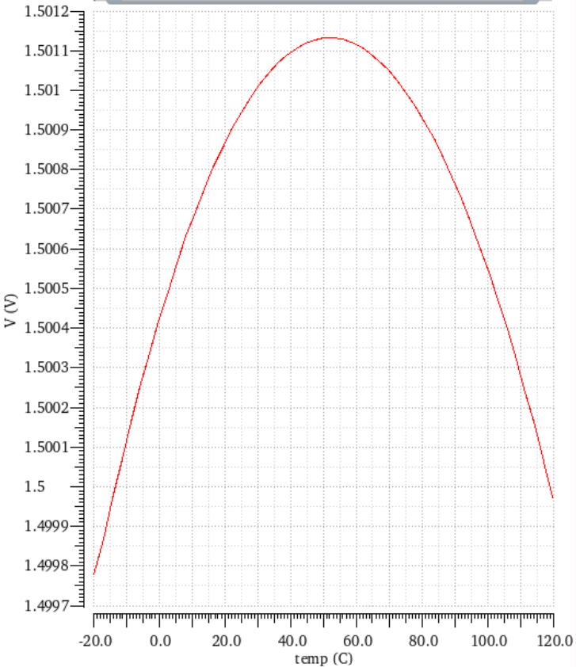
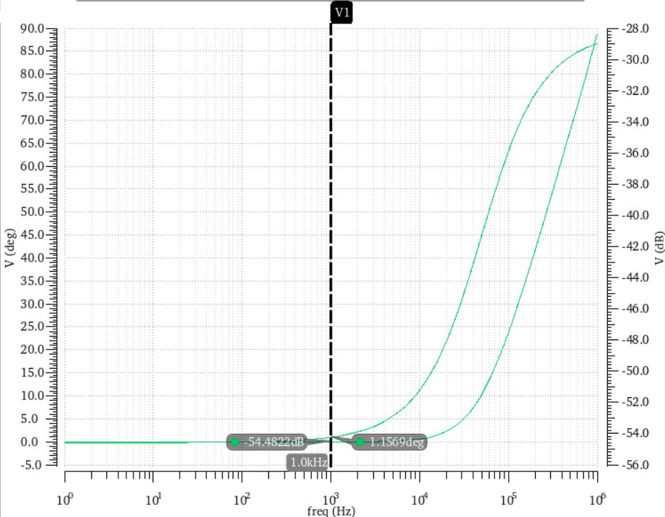
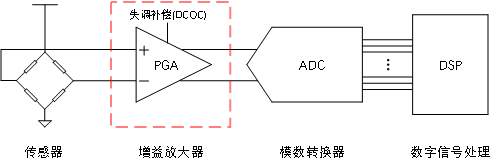
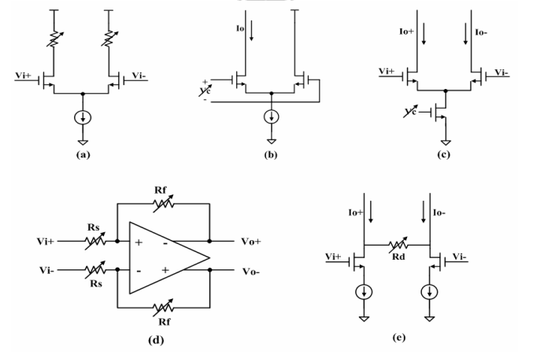

20220908 汇报
周镇峰
设计bandgap
了解PGA
 
VDD
温度系数(ppm)
电源抑制比(dB)
-20~120℃平均输出电压
2.7
5.965
50.16
1.500
2.85
5.781
51.61
1.500
3.0
6.436
54.4822
1.501
3.15
6.556
59.373
1.501
3.3
6.490
86.7191
1.501
应用于Sensor AFE的低噪声PGA设计
设计一款低噪声的PGA，该电路用于采集传感器信号的模拟前端。

低噪声、低失调、高速度、线性度、抗干扰

改变$g_m$或改变 $R_O$
未来工作：尝试设计一个低位数的PGA
谢谢聆听